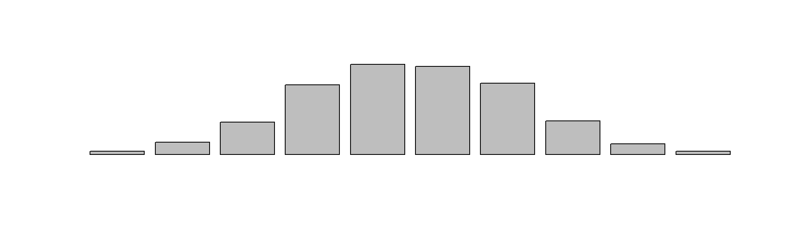

How to Break A Function
KEY TAKEAWAYS
For functions to work properly, focus on the following:
- Pay attention to the data type of arguments.
- When possible, use argument defaults to make functions more flexible.
- Use of implicit argument calls is convenient but can introduce errors.
- Get in the habit of using explicit return() statements.
- Make sure you pass all arguments needed for your function to avoid scope problems.
- Lexical Scoping is powerful but use sparingly.
This is a review of material that is covered in the Introduction to Functions lecture. For more depth you might find the following resources helpful as well:
- Writing Functions: R for Data Science by Hadley Wickam
- Notes on R Functions: Johns Hopkins Biostatistics Course 140.776
The purpose of this review is to highlight the most common ways in which you might break functions while you are creating them or while you are using them in a workflow.
The following packages are used:
Example Functions
The goal of a function is to enable the re-use of code. If I find myself having to do a lot of temperature conversions in my analysis, I might consider converting a “recipe” into a function.
### original data recipe
temp.in.celsius <- 100
temp.in.fahrenheit <- ( temp.in.celsius * 9/5 ) + 32
temp.in.fahrenheit # print the new temp ## [1] 212### repackage the recipe as a function
celsius_to_fahrenheit <- function( celsius=100 )
{
fahrenheit <- ( celsius * 9/5 ) + 32
return( fahrenheit )
}
celsius_to_fahrenheit( 100 ) # test the function ## [1] 212## [1] 5Argument Types
- object arguments are typically quoted
- object names are NOT quoted
- numbers are also NOT quoted
- logical T/F can be either
Passing values:
## [1] 10Passing objects:
## [1] 5Passing TRUE/FALSE values:
if_a_else_b <- function( case_a ){
if( case_a ){ return(5) }
if( ! case_a ){ return(0) }
}
if_a_else_b( case_a=TRUE )## [1] 5## [1] 0## [1] 5Which should see odd because it is the wrong data type:
## [1] "character"However, the if() function will coerce the string into a logical value.
## [1] 7But in other cases passing the characters “T”/“F” when the logical values T/F are expected will result in errors. For example:
Can you see why a=“FALSE” fails but a=“TRUE” was fine?
Hint, what are the order of operations for these equations?
- Add 3+4
- Compare to 5
- Evaluate if() condition
- Add 3+4
- Compare to 5
- Apply opposite (!) operator
- Evaluate if() condition
What happen here then?
print_2_4 <- function( v=1:4, rows ){
return( v[rows] )
}
# SELECTS EVEN ROWS THROUGH RECYCLING
print_2_4( rows=c(F,T) )## [1] 2 4## [1] NA NAWhen data types are very sensitive, potential errors can be managed with error handling:
print_2_4 <- function( v=1:4, rows ){
if( class(rows) != "logical" ){
stop( "Input 'rows' must be a logical vector." )
}
return( v[rows] )
}In this case the initial type condition ensures that data will not be corrupted by attempting to perform a subset operation using the wrong data type.
Implicit Argument Calls
An explicit argument call is one that uses the names directly:
## [1] 3We can also reference arguments implicitly by omitting the argument names and we get identical behavior:
## [1] 3However, the risk is that implicit calls are always sensitive to order:
## [1] -3Note that order does NOT matter in explicit calls:
## [1] 3## [1] 3Argument Matching
In the example above you can also get away with arguments referenced in the wrong order IF at least one is named:
## [1] 3## [1] 3That is because named arguments are assigned first then the remaining values are assigned to arguments by position. Consequently, these would all get you to the same place through matching by position:
## [1] 6## [1] 6## [1] 6## [1] 6## [1] 6## [1] 6Interestingly, we can also match based upon partial argument names. Even though the arguments are out of order, here, the values are still passed to the correct arguments because R will try to match the partial argument name with the argument list.
## [1] 6It will, however, fail if the match is not unique
## [1] 6In this case the partial argument name “x” is indeterminate between “xx” and “xy”:
divide( x=5, z=4, 3 )
# Error in divide(x = 5, z = 4, 3) :
# argument 1 matches multiple formal argumentsSame here, but since the “xy” argument is already provided R can now find a unique match for “x”.
## [1] 6CODE MAINTENANCE
If you writing code for a quick analysis or a report due in a few weeks then using implicit argument calls or partial argument names can save time.
If, however, you are writing LEGACY CODE that your organization plans to use over time then explicit argument names become a lot more important.
The reason is that your code probably depends upon packages that others have developed. Packages are updated all the time, and on occasion the arguments in functions change.
For example, if a function that formerly only required two arguments:
Now requires three:
And you have:
Your code may still run, but now the argument “y” will default to FALSE and your results will differ!
Most often these types of package changes cause your code to break, which is actually helpful because it is then easier to identify which functions have changed. Otherwise you might be scratching your head wondering why your results don’t make sense even though you are not receiving any errors.
In this example explicit argument calls would have caught the issue because if you tried to execute fx( x=10, y=TRUE ) you would have gotten an error that x2 was not provided or that x matches multiple arguments.
Although using explicit argument names is tedious, it is helpful for code that you will likely reuse in the future.
Argument Defaults
fx <- function( x ) VS fx <- function( x=10 )In some instances default values might make a function easier to use, especially when a function has a lot of arguments. For example, you can create a scatterplot by typing only:
When the scatterplot function requires a MINIMUM of 18 arguments:
## function (x, y = NULL, type = "p", xlim = NULL, ylim = NULL,
## log = "", main = NULL, sub = NULL, xlab = NULL, ylab = NULL,
## ann = par("ann"), axes = TRUE, frame.plot = axes, panel.first = NULL,
## panel.last = NULL, asp = NA, xgap.axis = NA, ygap.axis = NA,
## ...)
## NULLIt works because 17 of the 18 arguments are supplied with default values. Consider the mortgage calculator example. Since a 30-year mortgage is the most common type we might assume that is what the customer wants.
calcMortgage <- function( principal, APR, years=30 )
{
months <- years * 12 # covert years to months
int.rate <- APR / 12 # convert annual rate to monthly
# amortization formula
monthly.payment <- ( principal * int.rate ) /
(1 - (1 + int.rate)^(-months) )
monthly.payment <- round( monthly.payment, 2 )
return( monthly.payment )
}We can then use the function by providing the loan amount and today’s interest rate:
## [1] 1199.1We an also using implicit argument calls:
## [1] 1199.1And we can always override the default value provided if we want another value used:
## [1] 1687.71Note what happens, though, if we are not careful with our implicit calls. For example, after we change the order of the arguments:
We can use the function when providing values for only two arguments:
## [1] 1199.1## [1] 1199.1Except here we get an error:
calcMortgage( 200000, 0.06 )
# Error in calcMortgage(2e+05, 0.06) :
# argument "APR" is missing, with no defaultNote that we have one explicit argument (principal), one that has a default value (years), and only one remaining argument (APR).
calcMortgage( principal=200000, 0.06 )
# Error in calcMortgage(principal = 2e+05, 0.06) :
# argument "APR" is missing, with no defaultIn theory we have enough information to proceed, but R will only eliminate arguments that are explicitly named, regardless of whether others have default values provided.
Which is why you would typically see arguments with defaults listed last when a function is defined:
Return Values
It is best practice to use explicit returns from functions:
## [1] 9However, if you omit an explicit return call it will automatically return the results from the last executable line of code, so this would be equivalent in behavior to the function above:
## [1] 9Unless the last line of code is not returning a result, for example if it includes assignment:
NULL RETURNS
There are many instances when you want a function to execute but not return anything. For example, graphing functions produce plots but do not need to return other values. Printing functions might send a warning message or a nicely formatted table to the console, things that are usually not useful to preserve for later steps. So it is fine to NOT include a return() call at the end of the function if that is your intended behavior.
MULTIPLE RETURNS
Note that a function will only ever return at most one object. If you have multiple return calls, once the first executes then the rest of the code in the function is ignored.
sum_xy <- function( x, y ){
xy <- x + y
return( xy )
xyxy <- xy + xy
return( xyxy )
}
sum_xy( 4, 5 )## [1] 9Typically you only have multiple return calls when you have conditionality. For example, if you want to apply a log transformation only if X is greater than zero, and return zero otherwise.
In these cases where the return calls are only executed if the conditions are met it is helpful to print a message to show that none of the conditions were met so you can make sure your workflow doesn’t break because one function fails to execute.
log_x <- function(x){
if( x > 0 ){ return( log(x) ) }
if( x < 0 ){ return( 0 ) }
print( "Did not meet any conditions" )
}
log_x( 10 )## [1] 2.302585## [1] 0## [1] "Did not meet any conditions"INVISIBLE RETURNS
The alternative type of return that you see on occasion uses the invisible() return call. This operates the same as a regular return except that it will not print the return object by default. In order to see the returned values you need to assign them to a new object:
bplot_x <- function( x, y ){
xx <- cut(x,10,labels=paste0("bin",1:10))
tt <- table(xx)
barplot(tt,axes=F,axisnames=F)
invisible(tt)
}
After the graphic is created nothing is returned.
| bin1 | bin2 | bin3 | bin4 | bin5 | bin6 | bin7 | bin8 | bin9 | bin10 |
|---|---|---|---|---|---|---|---|---|---|
| 8 | 30 | 78 | 168 | 217 | 212 | 172 | 81 | 26 | 8 |
It is useful when the primary purpose of the function is for plotting or printing, but you might want to capture some information that is useful for later in the workflow.
Function Scope
Function scope means that any assignment done inside of a function will not impact variables in the global environment. The prevents conflicts that would arise when variable names are used within a workflow and within a function.
## [1] 8We can see that when we run sum_xy() we are assigning the value of x+y to z. So does assignment that happens within the function overwrite the z we have defined in our environment?
## [1] 2No, because function scope protects the variables in our global environment (our current R session), otherwise we would constantly be overwriting our data whenever functions we called happen to use the same variable names as we did.
The important thing to note is that when a function is called a new function environment is created. All of the steps are executed. A single object can be passed back to the global environment through the return() call. Then the function environment is deleted and R returns to the main global environment. The only way to overwrite the value of z would be to assign a new value to it:
## [1] 8Note that the global environment is not impacted by the function environment, but the reverse is not true. Consider:
## [1] 5We are only passing the value y=2 to the function, so how can it add x+y?
A function will first search locally for all of the variables it needs to execute. When it cannot find one it will then check the global environment to see if it exists. In this case it finds x=3 in the global environment, so uses that value for the calculation.
This is an example of breaking function scope.
Typically, we want functions to be self-contained input-output machines. We give them arguments, they execute the data recipe, and they return the result.
It is bad practice to create under-specified functions that do not have all of the arguments they need to execute.
However, there are certain instances where it might be necessary or convenient, so like implicit casting and recycling, R tolerates it to avoid run time errors.
SCOPE:
What happens in Vegas stays in Vegas.
Any assignment that happens inside a function stays inside the function.
Lexical Scoping
To fully understand function scope we need to understand the concept of parent environments. Consider the following case:
We pass the value of x to f(), which then calculates a new value for y. However, we don’t pass y to the function g(). The function g() must pull values of y and z from other environments. Since z has only been defined once we can guess that it will still be 1. However, y was defined both in the global environment and again in the f() environment. Which version will be used here, 2 or 6?
## [1] 7This example demonstrates the concept of a parent environment. When a function can’t find a variable it needs it will look to the parent environment. The global environment will always be the final parent environment, but it is not the first environment that is checked.
Since the function g() was called INSIDE of the function f(), then f() is the parent environment. It will look there first. Note that the function g() was able to retrieve y from the parent environment and z from the global environment and still execute fine.
This example is a little more challenging.
We can see g() will use z from the global environment, and we know from the previous example that g() will use the version of y from the parent environment. What about x? We pass the value 4 to f(), but we never assign it explicitly to x. Which x will be used?
## [1] 13This example shows that calling f(x=4) is equivalent to assigning the value of 4 to x within the function scope.
One more example:
f <- function(x){
g <- function(){
y <- 2*x
return(y)
}
h <- function(){
z <- 2*y
return(z)
}
res_g <- g()
res_h <- h()
return( c(res_g,res_h) )
}We can see that res_g will be 2x or 6. But what about res_h? Will h() return 2x2 or 2x6? Which value of y will be used?
## [1] 6 4The answer is 2x2 because the parent environment for h() is f(), NOT g(). Once g() finishes executing the temporary variables are all deleted, so the new y created inside of g() will disappear and the only one remaining when h() is called is the y from the global environment.
We could alter this behavior by assigning a new value for y inside of f() prior to calling h():
f <- function(x){
g <- function(){
y <- 2*x
return(y)
}
h <- function(){
z <- 2*y
return(z)
}
y <- g()
z <- h()
return( z )
}
x <- 3
y <- 2
f(x) # inside h() y=6; z=2*y## [1] 12Since we assigned the result of h() to a new y inside of f(), the function h() will now use the y from its parent environment f() and will not have to revert back to y in the global environment.
Lexical scoping are the rules for what happens when a variable is used within a function but is NOT passed as an argument to the function, NOR is it defined within that function’s local environment.
When encountering an undefined variable, the function will recursively search within parent environments until it finds an instance where x is defined.
The final parent environment is always the global environment.
Aside on Snake Case
Note the following conventions in this script:
- functions are named using snake_case
- objects are named using dot.case
This is far from a universal convention - you will see a lot of base R functions named using camelCase (start of new word designated by a capital letter). You rarely see dot.case used by tidyverse acolytes, as they tend to use snake_case for all objects. I find it useful, however, to differentiate functions from data objects for pedagogical purposes.
As an aside, the reason the convention has moved toward using snake_case for everything is because Python uses periods as an operator, not a character. It is used when functions have multiple “methods”, for example the function fx() might have different behaviors for different data types. You can invoke the method directly by typing function_name.method_name().
fx.f_method() # code to execute for factorsfx.n_method() # code to execute for numbersfx.c_method() # code to execute for strings
The most analogous operation is R is calling a package function without first loading the package using a library() call using the package::function() convention. It can be especially useful when two packages contain functions with the same name and you want to make sure you are using the correct version:
dplyr::filter()stats::filter()
It used to be the case that statisticians primarily used R for data programming and computer scientists primarily used Python. But as data science has emerged as a coherent field more data scientists are using R and Python somewhat interchangeably. RMD files can now run both R and Python code, for example.
If you have ever wondered why these conventions changed, this history is helpful. The inventors of R were both statisticians, so you frequently see camelCase and dot.case in base R code or older packages. The folks that developed the tidyverse framework were traditional computer scientists and were fluent in both languages. They adopted the snake_case naming convention to prevent Python programmers from getting confused when encountering dot.case in R code.